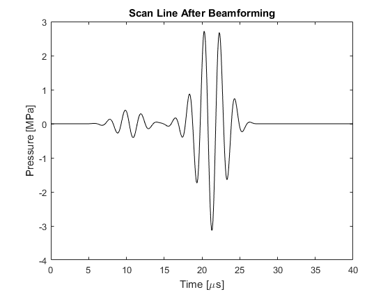

Using An Ultrasound Transducer As A Sensor Example
This example shows how an ultrasound transducer can be used as a detector by substituting a transducer object for the normal sensor input structure. It builds on the Defining An Ultrasound Transducer and Simulating Ultrasound Beam Patterns examples.
Contents
Running the simulation
In the previous ultrasound examples, the transducer object was used to replace the source input of kspaceFirstOrder3D. The same transducer object can also be used as a detector by using this to replace the corresponding sensor input. An equivalent sensor could be created using a sensor mask containing the grid points for each transducer element, and then averaging the recorded pressure signals over the appropriate grid elements after the simulation is complete. However, directly using the transducer object is both more convenient and more memory efficient (the average pressure across each element is calculated at every time step, and only the average is stored). In this example, two spherical objects embedded within the medium are used as the source, and an ultrasound transducer with 32 active elements is used as the detector. A snapshot is shown below.
The way in which the signals across each element are averaged within k-Wave depends on the setting for transducer.elevation_focus_distance. If this is set to inf, the signals across the grid points within each sensor element are averaged at each time step and only the average is stored. On the other hand, if an elevation focus is used, a buffer the length of the longest beamforming delay is filled (using a FIFO queue) and the elevation beamforming is computed on the fly once the buffer is filled. In both cases, this significantly reduces the memory requirements compared to storing the complete time history at every grid point within the transducer.
A plot of the returned sensor_data is shown below. This is indexed as sensor_data(element_number, time). The signal from the off-axis source that is closer to the transducer is stronger and arrives first.
Forming a scan line
The raw signals recorded by the transducer can be formed into a scan line by using the functionality of the kWaveTransducer class. The scan_line method takes the recorded sensor data and forms it into a scan line based on the current focus_distance and receive_apodization settings.
% extract a single scan line from the sensor data using the current
% beamforming settings
scan_line = transducer.scan_line(sensor_data);
A plot of the scan line is given below. Even though the signal from the off-axis source is stronger in the individual signals, after beamforming, the signal from the on-axis source is much stronger.
